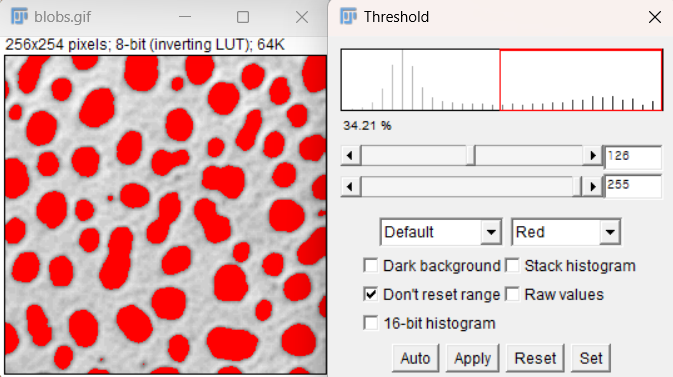
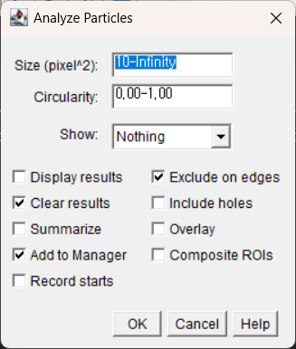
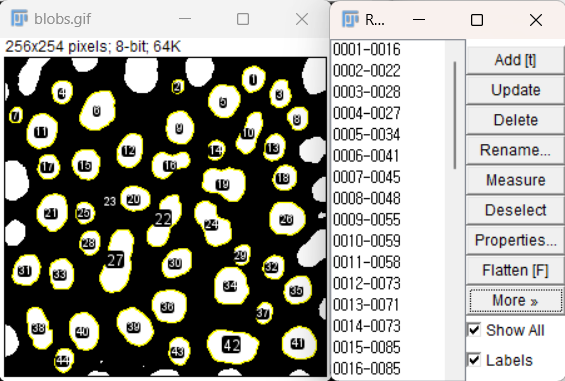

Basic Segmentation#
(Optional) Background Subtraction#
For this section, we demonstrate with the embryos sample, from File > Open Sample > Embryos.
Oftentimes the background illumination is not uniform, and this interferes with intensity-based thresholding. Fiji includes multiple methods to perform background subtraction in ImageJ, including Process > Subtract Background, Mean/Median Background Subtraction, or Gaussian Blur Subtraction. If you are not planning a quantitative analysis, Enhance Local Contrast (CLAHE, Contrast Limited Adaptive Histogram Equalization) may also be worth a try.
 Left to right: original, background subtracted, with CLAHE.
Left to right: original, background subtracted, with CLAHE.
However, any background subtraction used to process images should be carefully considered in relation to the original source of noise, how the image information is used, and any further processing or quantification of the image.
In some cases the Subtract Background plugin, or other methods, can also introduce artifacts that are not present in the original image.
Some Image.sc forum discussion here:
https://forum.image.sc/t/consensus-on-subtract-background-built-in-or-other/7061
Segmentation / Thresholding#
For this section we will open up blobs again: Ctrl-Shift-B
If we want to segment out the blobs we are interested in, one possible method is to use an intensity threshold. First, let’s look at the histogram of the intensity values using Ctrl-H.

We can see that most of the background pixels have an intensity value around 50, whereas there is another grouping of pixel intensities around 210, which is likely the areas we are interested in because this image has a white background. Notice that the values are stretched outwards; this indicates that the original range was likely very small or somehow adjusted.
Use Image > Adjust > Threshold to see the automatic threshold applied based on the original histogram.
This seems to segment the blobs pretty well. You can change the slider bars to see how the segmentation changes as the threshold moves.
When ready, click Apply to create the binarized mask. Notice that the blobs now have a value of255, and the background has been set to0. This represents a permanent change in the image values, so going forward, most quantified analysis involving pixel values must be performed by applying the segmentation as a mask on the original image (see [Masks] section).

There is also an Auto Threshold option under Image > Adjust > Auto Threshold, that you can use to compare different methods of thresholding. It is easiest to see the comparisons using the Try All method.

Morphological filtering#
Often the mask of the particles will pick up a lot of noise, and it is useful to filter them. The morphological operations Erode and Dilate from the menu Process > Binary can be combined in sequence to remove noise. When Erode is run first, the sequence is called Open, and removes small objects and speckle noise. When Dilate is run first, the sequence is called Close and fills small holes or gaps between mask objects.

Splitting chunks by watershed#
Often two smooth convex objects (cells!) will be touching and thereby detected as part of the same mask element. Watershed segmentation or Process > Binary > Watershed splits masks by drawing a narrow channel at narrow bottlenecks. This is useful for separating cells that were identified as part of the same mask.

Adding Selections to ROI Manager#
Press
Tto open the ROI manager.Use Edit > Selection > Create Selection to select all of the blobs based on the current threshold.
In the ROI Manager window, use More > Split to divide the selection into multiple ROIs.
You can click on the regions to see the specific blob it corresponds to.
If needed, the selected regions can be saved in a file and reopened later using More > Save.
One can also add selections to the ROI manager manually, if there are only a few objects to segment or if thresholding segmentation does not work for your sample.
Analyze Particles#
The Analyze Particles function can be useful for applying size exclusion or removing any blobs that are below our desired size threshold.
For example, we can see some smaller red circles in the image that may represent noise rather than a full blob we are interested in.
This can be especially useful if we have a biological problem, such as segmenting cells, where we know the cells must be above a certain size.
Open the ROI manager by pressing
T.If there are previous ROI selections that you would like to remove:
Click on the first one, hold
Shift, then click on the last one.Press
Deleteto clear them.
Use Analyze > Analyze Particles to open the function window.
Size can be used to determine what blobs are included. For example, specify
"30-Infinity"to remove smaller blobs.For many biological applications, it’s best to know the size of the pixels to understand how much area is excluded, and whether it corresponds to the expected size based on the experiment.
Ensure the Add to Manager box is selected to add the ROIs to the ROI manager.
For the Show dropdown, select Masks to display the following:
 
> Notice that some of the blobs that are present in the binarized image, like the one next to number 29, are not included in the mask.
Masks for Measurement#
Once you have a mask or the desired image, use Edit > Selection > Create Selection to add the regions to the ROI manager.
After selection, you can also use Edit > Selection > Create Mask to make a mask of the desired areas if the image is not already binarized.
To copy the ROI selection onto the original image:
Click on the mask while the selection is open.
Then click on the original image and press Shift + E or use Edit > Selection > Restore Selection.
 #
#
Making Measurements#
To set the desired measurements to be collected, use Analyze > Set Measurements.
This window will determine what results are displayed or saved from the image.

To create the measurements:
Use Analyze > Measure or Ctrl + M, while the desired image is active.
This may produce one measurement for the whole image if an ROI is not active.
To measure all ROIs at once, use Measure in the ROI Manager.
The checkboxes for Show All and Labels can be useful to see what regions are being measured.
If you want, use Edit > Selection > Make Inverse.
This will now select the entire background.
You can measure again to get the value for the background.